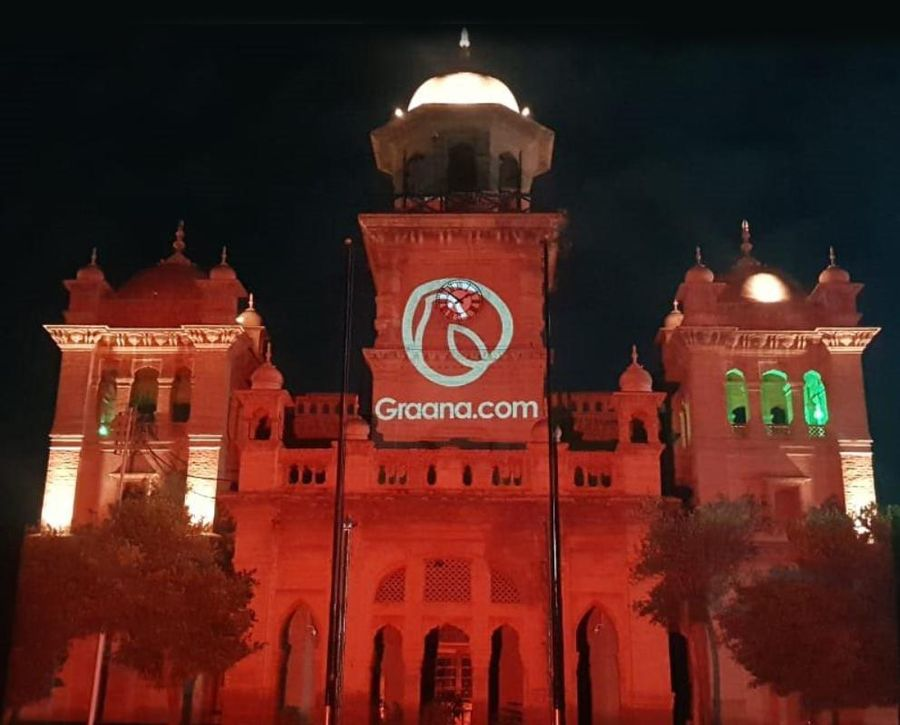

Surveying a building for projection mapping
How to survey a building for projection mapping: drawings, laser scanning, photogrammetry, reference points and what to ask for in the final model.

Every projection mapping show starts from a model of the surface. If the model is wrong by a few centimetres, the content will not land on the cornices, windows and arches it was designed around, and the team will spend rehearsal hours nudging warps instead of improving the show. A good survey is the cheapest insurance in the whole production. It is also one of the least glamorous parts of the job, so it is often rushed. At AKS we treat the survey as its own stage with its own deliverables, and this note explains the options, what each one is good for, and what to ask for before anyone climbs a ladder.
Content for a building is built on a template: a flat image whose pixels are mapped onto the real surfaces. Motion designers draw shapes that follow edges, light up window reveals, or make a tower appear to crack open. Those effects only work if the template matches the physical facade. A model that is slightly too wide or that misses a recessed bay produces content that looks correct on a monitor and wrong on the wall. Alignment on site can absorb small errors, as we describe in our note on aligning and warping projection to a building, but it cannot repair a model that has the wrong depth or the wrong proportions. Better data at the start means less correction later.
Start with what already exists
Before any new measurement, ask the owner or facilities team for existing material. Architectural drawings, elevations, old survey sets and conservation records can give you dimensions, floor heights and window sizes for free. Treat them with caution. Drawings show design intent, and buildings, especially older ones, drift from them through repairs, additions and settling. Heritage structures may have no reliable drawings at all. We use existing documents to plan the survey and to cross-check the results, not as the final word. Ask which date the drawings were made and whether later alterations are known.
For a flat, regular facade, a straight-on photograph plus a handful of measured distances can be enough to build a usable template. A common approach is to measure a few long dimensions, such as the overall width and the height of a known floor, and to scale a corrected photograph to match. This is quick and cheap, and it suits small projects and early concept work. Its limits are clear: it captures no depth, lens distortion in the photo can bend straight edges, and the result depends on the shooting position. It is a fair starting point for pitching an idea, but we would not rely on it for a facade with projecting balconies, deep window reveals or domes.
Photogrammetry
Photogrammetry builds a three-dimensional model from many overlapping photographs. Software finds matching features across images and calculates the camera positions and the shape of the surface. The equipment can be as simple as a good camera and a tripod, and for tall buildings a drone can capture the upper levels that cannot be reached from the ground. Its strengths are texture and cost. The model carries the real colour and detail of the surface, which is useful for previs and for matching content to ornament.
It also has weaknesses. Plain, uniform or glossy surfaces give the software little to match, glass and polished stone can confuse it, and the scale is not known unless you provide measured reference distances. Results depend on photo quality, overlap and light, so a rushed or poorly planned capture can produce a model with warped geometry. Photogrammetry is most reliable when it is tied to a few accurately measured control points on the building.
Laser scanning
A terrestrial laser scanner measures distances to millions of points from a fixed position and records them as a point cloud. Several scans from different positions are joined together to cover the whole building. The data is metric and dimensionally reliable, which is why laser scanning is common for survey work on complex or valuable structures. It handles plain surfaces that defeat photogrammetry, and it works in low light, though it still needs access to the viewpoints around the building.
The trade-offs are cost, access and processing. Scanners and trained operators are more expensive than a camera, a scan of a large building takes time on site, and the point cloud has to be cleaned and turned into a lighter surface model before it is useful to a content team. Shiny glass can also return poor data. Many projects use a combination: laser scanning for accurate geometry and photography for texture and fine detail.
Reference points and coordinate systems
Whatever method you use, agree on a coordinate system and a set of reference points. These are features that can be identified later, such as a corner of a window frame, the top of a column or a bracket, and that are measured or marked during the survey. They serve two purposes. First, they give the model a true scale and orientation. Second, they let the projection team find the same points on site during alignment, so that the virtual and real building can be matched quickly. It helps to record the survey position of the projectors too, or at least the planned viewing and throw positions, so that the same model can be used for the layout described in our note on projector placement.
Note how you will handle things that are temporary. Scaffolding, banners, air conditioning units, lighting fixtures and trees change between survey day and show day. We record them in the survey notes and, where we can, ask the owner whether they will still be there.
Choosing the right level of survey
The right method depends on the building, the content and the budget. A flat facade with simple content may need little more than careful photographs and measurements. A heritage building with domes, arches and deep ornament, or a show whose effects depend on exact edges, justifies photogrammetry or laser scanning. Ask what accuracy the content actually needs. Effects that follow edges closely need tight data. Soft atmospheric washes forgive a lot. Also think about access: surveying often needs permission from the owner, and for protected or government buildings that permission can take time, so it belongs early in the plan, alongside the approvals covered in our note on permissions for public projection mapping shows.
A survey checklist
| Question | What to confirm |
|---|---|
| What data already exists? | Drawings, elevations and old surveys, with dates and known alterations |
| Which method fits? | Photos and measurements, photogrammetry, laser scanning, or a mix |
| How accurate must it be? | A tolerance agreed against the content, not assumed |
| Is there a scale reference? | Measured control points that can be found again on site |
| Can every surface be seen? | Access to upper levels, recesses and the sides that will be lit |
| What will change by show day? | Scaffolding, banners, equipment and trees noted in the record |
| What is delivered? | A lightweight surface model, UV template and texture, in a format the content team can open |
| Who has permission? | Owner approval for access, drones and equipment, in writing |
A raw point cloud or a pile of photographs is not a deliverable a motion designer can use. Ask for a clean, lightweight surface model with sensible polygon counts, a flat template or UV layout that matches it, elevations with key dimensions marked, and a short note listing the reference points and any assumptions. It is also worth keeping the original capture data, because a later change to the show may need a part of the building to be modelled in more detail. That model feeds the previs process in our note on previsualization for projection mapping and the template settings in our guide to canvas resolution.
A careful survey will not appear in the final show, but the audience feels it as clean edges, windows that glow where they should and a facade that looks as if it was built to carry the image. If you have a building in mind, tell us about it through the contact section and we will help you decide how much surveying the project needs.
Planning a show on a real building?
Tell AKS Creative Studio the site and the effects you imagine, and we will plan the survey, the model and the content together.
Start a conversation ↗